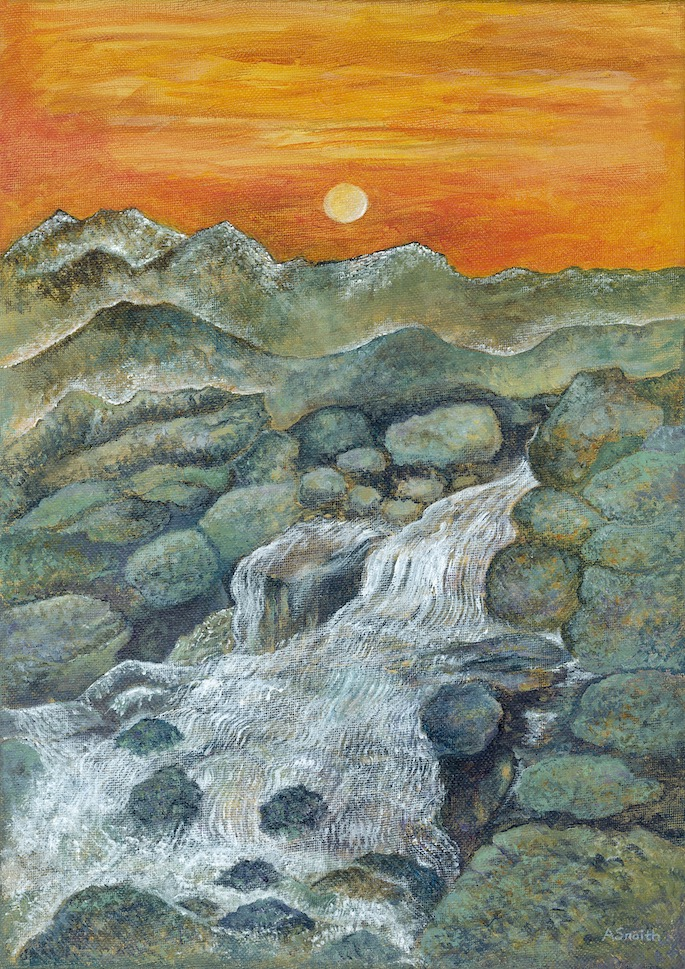

The Bulkeley Gallery

Cynnig arddangosfeydd celf dros dro gan artistiaid a ffotograffwyr lleol gyda chelf ar werth.
Mae arddangosfeydd crefftus yn siop anrhegion y gwesty yn ategu pob arddangosfa.
Offering temporary art exhibitions from local artists and photographers with art for sale.
Artisan displays in the hotels gift shop complements each exhibition.
01248 810415
bulkeleyhotel.co.uk
THE BULKELEY HOTEL, CASTLE STREET, BEAUMARIS, LL58 8AW
Hawdd gael hyd iddo o’r Stryd Fawr ac o’r glan môr ym Miwmares.
Easily seen in central Beaumaris, with access from the High Street and Seafront.
H’artworks (Anne Snaith)

Gwaith wedi ei ysbrydoli gan ei ffydd a chan wead a lliw yn y tirwedd, coed a’r môr o gwmpas Ynys Môn.
Peintiadau amlgyfrwng gan gynnwys sidan, dyfrlliw, pastel a batic.
Yn cynnal gwersi a chlybiau yn wythnosol. Mae gweithdai ar gael. Artist preswyl yng Ngwesty’r Bulkeley.
Inspired by her faith and the colour and textures in the landscape, trees and seascapes around Anglesey.
Painting in a wide variety of media including silk, watercolours, pastels, acrylic and batik.
Running classes and clubs weekly, workshops available to book.
01248 490370 / 07531 384434
hartworks@btinternet.com
www.hartworksgallery.co.uk
THE ART STUDIO, THE BULKELEY HOTEL, BEAUMARIS, LL58 8AW
Hawdd gael hyd iddo o’r Stryd Fawr ac o’r glan môr ym Miwmares
Easily seen in central Beaumaris, with access from the High Street and Seafront.